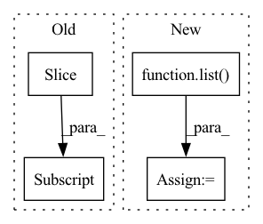

Pattern ID :15922

Before Change
piece = spec[:, start:end]
if i == num:
piece = spec[:, start:]
freq(piece)
time(piece)
After Change
return spec
else:
chunks = torch.split(spec, chunk_size, dim=1)
to_be_masked = torch.stack(list(chunks[:-1]), dim=0).unsqueeze(1)
time_mask(to_be_masked)
freq_mask(to_be_masked)
masked = to_be_masked.squeeze(1).permute(1, 0, 2).reshape((spec.shape[0], -1))
return torch.cat([masked, chunks[-1]], dim=1)
In pattern: SUPERPATTERN
Frequency: 5
Non-data size: 4
Instances
Fragment ID: 53685651
Project Name: ivankunyankin/quartznet-asr
Commit Name: 28f999e7cfbefb66c9545f32e76a7454a7432aac
Time: 2021-07-01
Author: IKunyankin@gmail.com
File Name: utils.py
M Class Name: AnonimousClass
N Class Name: AnonimousClass
M Method Name: augment(4)
N Method Name: augment(4)
M Parent Class:
N Parent Class:
M File Name: utils.py
N File Name: utils.py
M Start Line: 57
M End Line: 82
N Start Line: 57
N End Line: 74
'>
Before Change
while token_start_index != -1:
try:
token_start_index = text2tokens.index(ent2token[0], token_start_index)
if text2tokens[token_start_index:token_start_index + ent_token_len] == ent2token:
break
else:
token_start_index = text2tokens.index(ent2token[0], token_start_index + 1)
After Change
token_end_indexs = [i for i,v in enumerate(text2tokens) if v==ent2token[-1]]
token_start_index = list(filter(lambda x:token2char_span_mapping[x][0] == ent_span[0], token_start_indexs))
token_end_index = list(filter(lambda x:token2char_span_mapping[x][-1]-1 == ent_span[1], token_end_indexs)) // token2char_span_mapping[x][-1]-1 减1是因为原始的char_span是闭区间，而token2char_span是开区间
if len(token_start_index)==0 or len(token_end_index)==0:
print(f"[{ent}] 无法对应到 [{text}] 的token_span，已丢弃")
'>
Fragment ID: 53685667
Project Name: gaohongkui/globalpointer_pytorch
Commit Name: 5146e4d180d865b94c8e0d173320f021df21498d
Time: 2021-07-31
Author: 1427224680@qq.com
File Name: common/utils.py
M Class Name: Preprocessor
N Class Name: Preprocessor
M Method Name: get_ent2token_spans(3)
N Method Name: get_ent2token_spans(3)
M Parent Class: object
N Parent Class: object
M File Name: common/utils.py
N File Name: common/utils.py
M Start Line: 42
M End Line: 68
N Start Line: 42
N End Line: 58
'>
Before Change
split_idx_train = n_train + n_lags + n_forecasts - 1
split_idx_val = split_idx_train - n_lags if inputs_overbleed else split_idx_train
df_train = df.copy(deep=True).iloc[:split_idx_train].reset_index(drop=True)
df_val = df.copy(deep=True).iloc[split_idx_val:].reset_index(drop=True)
log.debug("{} n_train, {} n_eval".format(n_train, n_samples - n_train))
return df_train, df_val
After Change
if isinstance(df, list):
df_list = df.copy()
df_train_list = list()
df_val_list = list()
if local_modeling:
for df in df_list:
df_train, df_val = single_split_df(df, n_lags, n_forecasts, valid_p, inputs_overbleed)
df_train_list.append(df_train)
'>
Fragment ID: 53685681
Project Name: ourownstory/neural_prophet
Commit Name: d07b79568ef37904de81ba00248764233fbaa8c8
Time: 2021-10-07
Author: ourownstory@users.noreply.github.com
File Name: neuralprophet/df_utils.py
M Class Name: AnonimousClass
N Class Name: AnonimousClass
M Method Name: split_df(6)
N Method Name: split_df(5)
M Parent Class:
N Parent Class:
M File Name: neuralprophet/df_utils.py
N File Name: neuralprophet/df_utils.py
M Start Line: 297
M End Line: 312
N Start Line: 506
N End Line: 539
'>
Before Change
inds_all = list(range(len(obs_traj)))
succ_num = 10
inds_10 = inds_all[:succ_num]
inds_e = inds_10[::split_x]
inds_e = list(inds_e)
inds_10 = list(inds_10)
inds_o = set(inds_10) - set(inds_e)
inds_o = list(inds_o)
After Change
inds_succ = inds_all[:exp_num]
inds_o = inds_succ[:split_x]
inds_o = list(inds_o)
inds_succ = list(inds_succ)
inds_e = set(inds_succ) - set(inds_o)
inds_e = list(inds_e)
print("// select {} trajs in expert dataset as D_e".format(len(inds_e)))
'>
Fragment ID: 53685648
Project Name: ryanxhr/dwbc
Commit Name: b3791e408af7125fde12cda1cdeaefbaa400aacc
Time: 2022-06-30
Author: xuhaoran8@jd.com
File Name: get_dataset.py
M Class Name: AnonimousClass
N Class Name: AnonimousClass
M Method Name: dataset_split_expert(4)
N Method Name: dataset_split_expert(3)
M Parent Class:
N Parent Class:
M File Name: get_dataset.py
N File Name: get_dataset.py
M Start Line: 155
M End Line: 173
N Start Line: 136
N End Line: 171
'>
Before Change
selector.fit(self.train_features, self.train_labels)
self.rfe_feature_rank=selector.ranking_
df= pd.DataFrame(list(zip(self.feature_names, self.rfe_feature_rank.tolist())), columns=["Feature", "Rank"])
best_features_scores=df.sort_values(by=["Rank"], ascending=True)[:num_features]
best_features_names=best_features_scores.Feature.tolist()
best_features_table=self.feature_table[best_features_names+[self.label_column]]
return best_features_scores, best_features_names, best_features_table
After Change
self.selector.fit(self.train_features, self.train_labels)
self.rfe_feature_rank=self.selector.ranking_
df= pd.DataFrame(list(zip(self.feature_names, self.rfe_feature_rank.tolist())), columns=["Feature", "Rank"])
best_features_names=[x for x,v in list(zip(G.feature_names, G.selector.support_.tolist())) if v==True]
best_features_scores=df.sort_values(by=["Rank"], ascending=True)
best_features_table=self.feature_table[best_features_names+[self.label_column]]
return best_features_scores, best_features_names, best_features_table
'>
Fragment ID: 53685641
Project Name: radtorch/radtorch
Commit Name: a4dccc68cb4935fe0222e31d045079d0523ea640
Time: 2020-04-11
Author: elbanan@users.noreply.github.com
File Name: radtorch/test.py
M Class Name: Feature_selection
N Class Name: Feature_selection
M Method Name: rfe(3)
N Method Name: rfe(4)
M Parent Class: Classifier
N Parent Class: Classifier
M File Name: radtorch/test.py
N File Name: radtorch/test.py
M Start Line: 171
M End Line: 179
N Start Line: 170
N End Line: 175